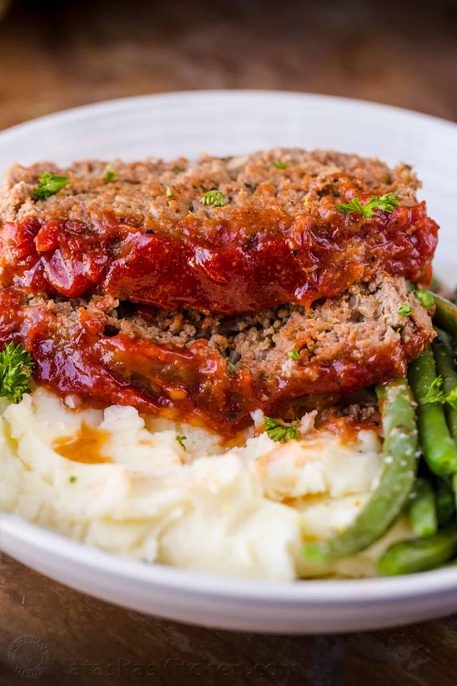

Meatloaf Recipes

Description
A meatloaf is a filling and lovely evening meal for you to enjoy as you
please
Ingredients
- 2 lbs ground beef, 85% or 90% lean
- 1 med onion, finely chopped
- 2 large eggs
- 3 garlic cloves, minced
- 3 Tbsp ketchup
- 3 Tbsp fresh parsley, finely chopped
- 3/4 cup Panko breadcrumbs
- 1/3 cup milk
- 1 ½ tsp salt, or to taste
- 1 ½ tsp Italian seasoning
- ¼ tsp ground black pepper
- ½ tsp ground paprika
Steps
-
Line a 9”x5” loaf pan with parchment paper and preheat oven to 375°F.
-
In a large bowl, add all of the ingredients for the meatloaf. Mix well
to combine.
-
Add meat to the loaf pan, gently press meat down and shape evenly and
bake meatloaf at 375˚F for 40 minutes.
-
In a small bowl, mix all of the ingredients together for the sauce.
Spread the sauce over meatloaf then return to oven and bake additional
15-20 minutes or until the internal temperature is 160˚F. Rest meatloaf
10 minutes before slicing. Drizzle with baking juices from the pan.